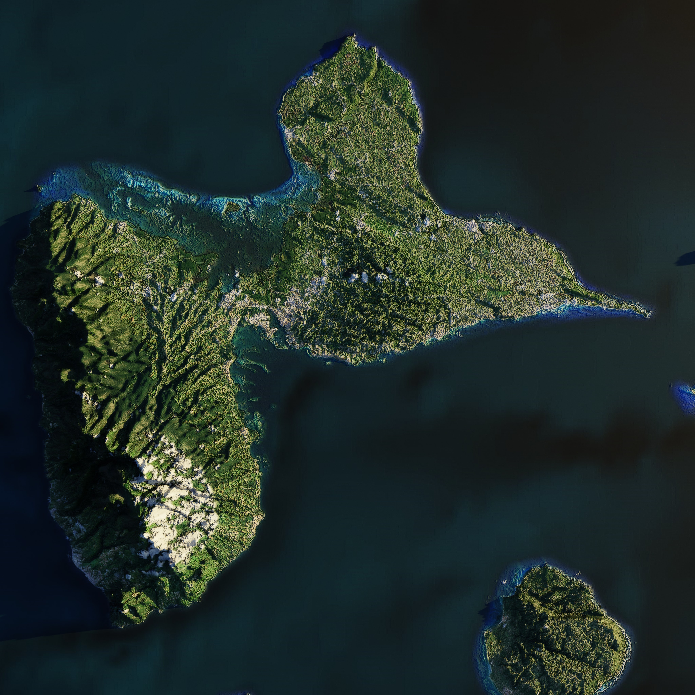

Guadeloupe

La Guadeloupe en bref
Posée sur l’arc des Petites Antilles, la Guadeloupe est constituée en réalité d'un archipel de sept îles. Karukera, comme on la nomme en amérindien, la partie principale, a la forme d’un papillon, à laquelle sont adjointes les Saintes, Marie-Galante et la Désirade.
La Guadeloupe est un département français d’Outre-Mer, depuis la loi du 19 mars 1946. Le département est découpé en deux arrondissements (Basse-Terre et Pointe-à-Pitre), subdivisés en 40 cantons et 32 communes (respectivement, 17 cantons, 18 communes et 23 cantons, 14 communes).
Comme dans tous les départements d’Outre-Mer, tous les textes législatifs nationaux y sont applicables mais peuvent faire l’objet de mesures d’adaptation "nécessitées par leur situation particulière" (Art. 73 de la Constitution). La Guadeloupe est dotée d’un Conseil Régional et d’un Conseil Départemental.
Elle est représentée au niveau national par 3 sénateurs et 2 députés, et 2 représentants au Conseil économique et social. L’état est représenté par le Préfet établi à Basse Terre et 1 sous-préfet à Pointe-à-Pitre.
En tant que département français d’Outre-Mer, la Guadeloupe fait partie de l’Union européenne au sein de laquelle elle constitue une région ultra-périphérique ; à ce titre, elle bénéficie de "mesures spécifiques" qui adaptent le droit communautaire en tenant compte des caractéristiques et contraintes particulières de ces régions.
Géographie
Région monodépartementale, la Guadeloupe se présente géographiquement sous la forme d’un archipel de 1 702 km², constitué de cinq groupes d’îles : la Guadeloupe continentale, d’une superficie de 1 438 km², composée de la Basse-Terre à l’Ouest (848 km²) et la Grande-Terre à l’Est (590 km²), séparées par un étroit canal, la Rivière Salée et les îles voisines, l’archipel des Saintes (14 km²), La Désirade (22 km²) et Marie-Galante (158 km²).
Economie
La Guadeloupe offre la caractéristique de posséder un système productif complet par rapport aux pays voisins de la zone qui disposent soit d’une économie de rente (pétrole, placements financiers offshore), soit d’une économie polarisée (tourisme).
L’agriculture
L’économie guadeloupéenne repose sur le secteur agricole dont la production de la banane et la filière canne-sucre-rhum sont les principales cultures.
La banane reste le premier produit d’exportation en volume. La production récoltée en 2007 de 40 181 tonnes traduit une baisse de production due notamment aux dégâts occasionnés par le cyclone DEAN, mais aussi à la baisse continue de la production depuis plusieurs années (réduction des surfaces exploitées 2 340 hectares en 2007, réforme de l’Organisation Commune des Marchés (OCM) banane, poursuite de la mutation du secteur).
=> Retour à l'Acceuil